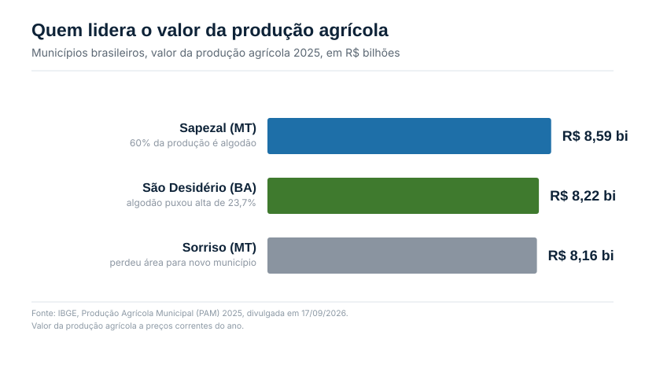
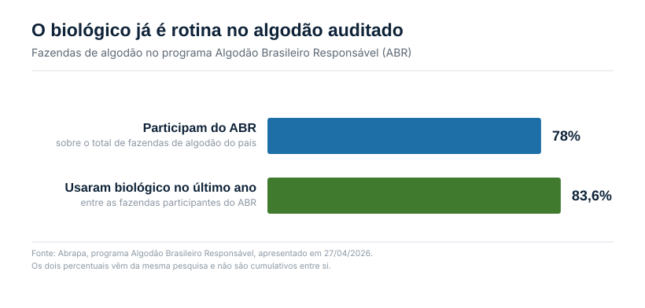

O mapa do agro tem um novo primeiro lugar
Na quinta-feira, 17 de setembro, o IBGE divulgou a Produção Agrícola Municipal (PAM) de 2025, o levantamento que soma o valor de tudo o que cada município brasileiro colheu no ano. Depois de seis anos com Sorriso (MT) no topo, o novo primeiro lugar é Sapezal, também no Mato Grosso.
A troca não veio de uma queda de Sorriso. Veio de um recorte de mapa: parte do território do município foi transferida para a criação de Boa Esperança do Norte, cidade instalada em janeiro de 2025, e isso reduziu em 9,3% a área plantada atribuída a Sorriso nas estatísticas. Mas o que colocou Sapezal na frente foi crescimento de verdade. A produção agrícola do município saltou 46,6% em 2025, puxada por um único produto: o algodão.
Dos R$ 8,59 bilhões produzidos em Sapezal, 60% (R$ 5,13 bilhões) vieram só do algodão herbáceo, com 1,2 milhão de toneladas colhidas. Em segundo lugar no ranking nacional ficou São Desidério, na Bahia, também impulsionado por algodão, com alta de 23,7% no valor de produção. É a mesma cultura decidindo as duas primeiras posições do ranking, uma no Cerrado mato-grossense, outra no Cerrado baiano.

No total nacional, a produção agrícola brasileira somou R$ 927,2 bilhões em 2025, alta de 18,4% sobre 2024. O dado municipal importa porque mostra onde esse crescimento se concentra: não é um recorde difuso, é puxado por regiões específicas, com uma cultura específica.
A semana em que a cadeia se reúne
A divulgação da PAM antecede em cinco dias o 15º Congresso Brasileiro do Algodão, que a Abrapa realiza de 22 a 24 de setembro no Expominas, em Belo Horizonte. É o maior encontro da cotonicultura nacional, e chega num momento em que o setor tem números para comemorar e uma pauta de custo para discutir.
O Brasil fechou o ano comercial encerrado em julho de 2026 com recorde de exportação, 3,37 milhões de toneladas de algodão, com a China na liderança das compras. Mas o próprio congresso reconhece que vender mais não é o mesmo que ganhar mais: a oferta elevada, no Brasil e em outros países, limita a recuperação das cotações, enquanto fertilizantes, defensivos, máquinas, combustível, financiamento e armazenagem seguem pressionando o custo de produção, o mesmo tipo de pressão que já tratamos na Ed. 04.
O que já sustenta essa liderança embaixo da terra
Sapezal não virou capital do agro por acaso, e parte do argumento está embaixo da terra. Levantamento da consultoria Kynetec, apresentado no Fórum Bioinsumos no Agro em agosto, mostra que a adoção de bioinsumos no algodão brasileiro já chega a 80% da área, puxada, entre outras aplicações, pelo tratamento industrial de sementes com bionematicidas. É a cultura com maior penetração biológica entre as principais do país, à frente até da soja, que soma mais de 58 milhões de hectares tratados.
Por que o nematoide pesa tanto no algodão
A explicação para essa adoção alta está na pressão sanitária. Levantamento conduzido pela Embrapa e pelo Instituto Mato-grossense do Algodão (IMAmt) nas safras 2011/2012 e 2012/2013 encontrou Pratylenchus brachyurus em 96% das amostras de solo do estado, o nematoide mais distribuído. Mas o próprio estudo aponta que essa espécie, isolada, não está relacionada à queda de produtividade do algodoeiro.
O problema é outra espécie, presente em proporção menor, mas com efeito maior: o Meloidogyne incognita, causador de galhas nas raízes, encontrado em 23% das áreas amostradas em Mato Grosso. Segundo o pesquisador João Flávio Veloso Silva, da Embrapa Agrossilvipastoril, essa espécie está fortemente relacionada à baixa produtividade, sobretudo quando a infestação ocorre junto com solo compactado. Os dois fatores se somam: a planta tem pouco volume de solo para explorar, e o nematoide ataca justamente as raízes que restaram nessa área menor.
No Cerrado baiano, onde fica São Desidério, o quadro é parecido em gravidade e mais amplo em espécies. Pesquisa da Embrapa Algodão, com amostragem em 96 fazendas de 11 municípios nas safras 2016/2017 e 2017/2018, encontrou pelo menos uma das três principais espécies de nematoide em 92% dos 835 talhões avaliados. O nematoide das lesões radiculares apareceu em 85% das amostras, o das galhas em 37%, e o reniforme em 14%, com o das galhas apontado como o de maior relação com perda de produtividade.
Nas duas regiões que hoje lideram o ranking nacional de produção agrícola, o nematoide não é um problema pontual. É presença quase universal no solo, e a diferença entre uma safra cheia e uma safra comprometida está em qual espécie predomina e em como o produtor trata a semente antes de plantar.
Um mercado que já tem tamanho, e ainda tem espaço
O segmento de bionematicidas, os biológicos usados especificamente contra nematoide, movimentou R$ 1,8 bilhão em 2025, com 44 milhões de hectares tratados no Brasil, segundo a CropData, levantamento trimestral da CropLife Brasil. É um mercado que a própria entidade já classifica como maduro, integrado aos protocolos de manejo sustentável, não mais uma novidade em fase de adoção.
No algodão especificamente, essa maturidade aparece em números de auditoria, não só de venda. Dentro do programa Algodão Brasileiro Responsável, da Abrapa, 78% das fazendas de algodão do país participam da certificação, e entre essas, 83,6% usaram algum produto biológico no último ano para controle de pragas e doenças.

Os 80% medidos pela Kynetec dizem respeito, sobretudo, ao bionematicida aplicado no tratamento industrial de sementes, um produto dentro de um leque bem maior. O sulco de plantio, onde máquinas equipadas com sistema de inoculação aplicam o biológico junto à semente no momento do plantio, é um canal à parte, usado inclusive quando há incompatibilidade entre produtos no tratamento de sementes, e ainda tem espaço para crescer, tanto em área quanto em variedade: biofungicidas, bioestimulantes e outros inoculantes ocupam hoje uma fração menor desse mesmo canal. Some-se a isso o controle de pragas foliares e de doenças da parte aérea, onde a adoção no algodão segue mais gradual do que em soja e milho segunda safra, que teve salto de 6% para os patamares atuais em poucos ciclos, puxado pela disseminação da cigarrinha.
Há também uma variável regulatória em andamento que toca diretamente esse mercado: o decreto que regulamenta a Lei dos Bioinsumos (15.070/2024) está com a minuta concluída na Casa Civil e deve ser assinado ainda este mês, segundo apuração da imprensa especializada. O texto separa definitivamente bioinsumos do regime de fertilizantes e cria regras próprias de registro, produção e fiscalização, um tema que deve aparecer nas conversas do CBA em Belo Horizonte.
O que isso significa para quem decide o pacote de algodão
A leitura direta é que o algodão do Cerrado não está apenas colhendo recorde de área e preço internacional favorável. Ele está colhendo em cima de uma base biológica já consolidada, especialmente no manejo de nematoide via tratamento de sementes, que se tornou parte da rotina, não diferencial competitivo.
Para quem monta o pacote da safra, o ponto de atenção não é mais "vale a pena usar biológico". É saber qual espécie de nematoide predomina na área, porque Pratylenchus e Meloidogyne pedem estratégias diferentes, e um produto eficaz contra um não entrega o mesmo resultado contra o outro. Essa distinção só aparece com amostragem de solo e raiz enviada a laboratório de nematologia, o mesmo ponto que fechou a Ed. 04.
O espaço de crescimento para o mercado de bioinsumos no algodão não se resume ao que já foi ocupado. Dentro do próprio sulco de plantio ainda há espaço para crescer, com mais produtos e mais área tratada além do nematicida. E fora dele, a proteção foliar e o manejo de doenças ao longo do ciclo seguem como frente aberta, num ponto em que soja e milho segunda safra ainda estão à frente do algodão na curva de adoção biológica.